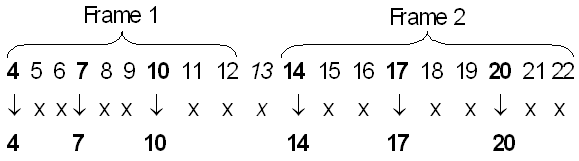

DVVA, DVVA? - (Define Vector VAriable)
The DVVA command (Define Vector VAriable) defines a vector variable for a vector label. The DVVA? query returns the definition of the specified or of all vector variables.
Vector variables specify filter criteria for data created by digital capturing. Note that the DVVA command only defines the criteria. The actual extraction is performed by the DIDT? query. You pass the filter criteria to DIDT? by specifying the name of a vector variable as one of its parameters.
Every vector variable is associated with one or more pins. DIDT? will only return data from these pins.
The unit by which relevant or irrelevant information is specified is called a vector. A vector consists of the values that were captured in one test system cycle from the selected pins at the same edge. Thus, if n pins are associated with the vector variable, a vector is a sequence of n binary digits. The captured data of the selected pins form a sequence of vectors. More than one vector can be captured in one tester cycle.
Irrelevant vectors are discarded in two steps, both of which are controlled by the parameters of the vector variable passed to DIDT?. These steps are as follows:
- A start segment of the vector sequence can be discarded before the upload. The length of
this start segment is defined in the init_discard parameter of the vector
variable.
Suppose the captured data consists of 22 vectors and you have set init_discard to 3. Then the vectors
4 5 6 7 8 9 10 11 12 13 14 15 16 17 18 19 20 21 22 will be uploaded to the workstation.
- After the upload, the vectors will be filtered by the following parameters of the vector variable:
- nr_vector_interdisc
- nr_vec_per_frame
- nr_frame_interdisc
- nr_of_frames
The names of these variables are derived from the assumption that the captured data consist of blocks of relevant vectors which are called frames, but that these frames can be interspersed with irrelevant vectors (referred to by nr_vector_interdisc), and that irrelevant vectors can also occur between frames (referred to by nr_frame_interdisc).
If you have set vectors_interdisc to 2, nr_vec_per_frame to 3, nr_frame_interdisc to 1, and nr_of_frames to 2, then the extraction process for the uploaded vectors of step 1 can be visualized as follows:

Vector 13 is discarded because of nr_frame_interdisc, all the others because of no_vectors_interdisc.
After this extraction process, the remaining vectors are returned in 32 bit words that are called samples. If the vector variable is associated with more than one pin (parallel transfer mode) it is assumed that one vector makes up a complete information unit; in this case, only one vector is contained in one sample. When the vector variable is defined for only one pin you can specify that one sample contains several successive vectors (serial transfer mode); the number of these vectors is defined with the nr_vec_per_sample parameter.
If in the example above the vector variable has been defined for only one pin, and nr_vec_per_sample has been set to 3, two samples would be returned; the first would contain the vectors 4, 7, 10, and the second the vectors 14, 17, 20. If nr_vec_per_sample is set to 6, then the relevant vectors of both frames will be returned in one sample.
DVVA
DVVA {"name"}, {type}, {"evector_label"}, {xfer_mode}, [device_cycle], [start_vector_nr], ["capt_label"], [init_discard], {nr_vec_per_frame}, [nr_vec_per_sample], [nr_vector_interdisc], [nr_of_frames], [nr_frame_interdisc], {(pinlist)}
DVVA?
DVVA? {"name"|ALL}[, (portlist)]
returns:
DVVA {"name"}, {type}, {"vector_label"}, {xfer_mode}, [device_cycle], [start_vector_nr], ["capt_label"], [init_discard], {nr_vec_per_frame}, [nr_vec_per_sample], [nr_vector_interdisc], [nr_of_frames], [nr_frame_interdisc], {(pinlist)}
Parameters
name |
Name of the vector variable to be defined. The name must be unique across vector labels. If the identifier ALL is used in the query, all those vector variables will be returned that were defined for vector labels of the specified ports. |
type |
Type of vector variable. Currently, only the type DIGCAPT is supported. |
vector_label |
Name of a vector label. Only main vector labels are supported. |
xfer_mode |
Optional parameter that determines the transfer mode. The options available are: PARA Parallel. This is the default. SERI Serial Note that you cannot select SERI if the vector variable is associated with more than one pin. |
device_cycle |
CURRENTLY NOT USED. |
start_vector_nr |
CURRENTLY NOT USED. |
capt_label |
This parameter describes a label reference to a capture block within a vector label which has been set aside for digital capture. If this parameter is specified, the vector variable is defined with respect to this capture area. If it is not specified, the capture label references the entire pattern. CURRENTLY NOT USED, DO NOT SPECIFY. |
init_discard |
The offset relative to the start location of a capture block within the capture memory. The vectors before this offset will not be uploaded. The default value is 0. |
nr_vec_per_frame |
The number of relevant vectors within a frame. |
nr_vec_per_sample |
The number of (relevant) vectors that are contained in one sample. The suitable values for this parameter depend on the selected transfer mode (xfer_mode parameter).
|
nr_vector_interdisc |
Defines the length of irrelevant vector blocks within a frame. These will be discarded in step 2 of the extraction process. If set to 2, for example, only the first and then every third vector will be extracted within a frame. The default value is 0, in which case no vectors within a frame will be discarded. |
nr_of_frames |
The number of frames that are to be extracted, starting from the first frame. The default value is 1. |
nr_frame_interdisc |
The number of irrelevant vectors between frames. These will be discarded in step 2 of the extraction process. The default value is 0. |
pinlist |
List of pins for which the vector variable is defined. The pins specified here should also be associated with the vector label referenced by the vector_label parameter. Only then will the digital data of these pins be retrieved by DIDT?, if DIDT? is called with the actual vector variable. If the list contains more than one element, the element names must be separated with a comma. Up to 32 pins can be associated with one vector variable. If you have set the xfer_mode parameter to SERI, specify only one pin. If you have set xfer_mode to PARA, the LSB of the sample will be assigned to the last pin of the pin list. |
portlist |
If you specify ALL for name in the query, the vector variables of those vector labels will be returned that are associated with the ports specified here. The default for this parameter is the default port @ to which all pins belong. Specify @@ to display all vector variables for all labels of all ports. |
Application
Digital Capture Applications.
Errors
An error occurs if:
- The referenced vector label is not yet defined.
- The variable name is not unique.
- The vector label does not reside in sequencer memory (SM).
- A
start_vectoris specified. - The vector variable exceeds the size of the vector label or the referenced capture label.
- The PARA mode has been selected for xfer_mode, and nr_vec_per_sample is not 1.
- The referenced pin names have not been defined with the DFPN command.
Example
> DVVA "vec_1",DIGCAPT,"port2_A",PARA,,,,0,1,1,0,\ 1,0,(I/O5_2) > DVVA "vec_2",DIGCAPT,"port2_A",PARA,,,,0,1,1,0,1,0,(I/O7_2,I/O6_2) > DVVA "vec_3",DIGCAPT,"port1_B",PARA,,,,0,1,1,0,\ 1,0,(Q7_1) > DVVA? ALL,(port_1) < DVVA "vec_3",DIGCAPT,"port1_B",PARA,,,,0,1,1,0,1,0,(Q7_1) > DVVA? ALL,(port_2) < DVVA "vec_1",DIGCAPT,"port2_A",PARA,,,,0,1,1,0,1,0,(I/O5_2) < DVVA "vec_2",DIGCAPT,"port2_A",PARA,,,,0,1,1,0,1,0,(I/O7_2,I/O6_2)
Functional changes
- Introduced before SmarTest 6.3.2